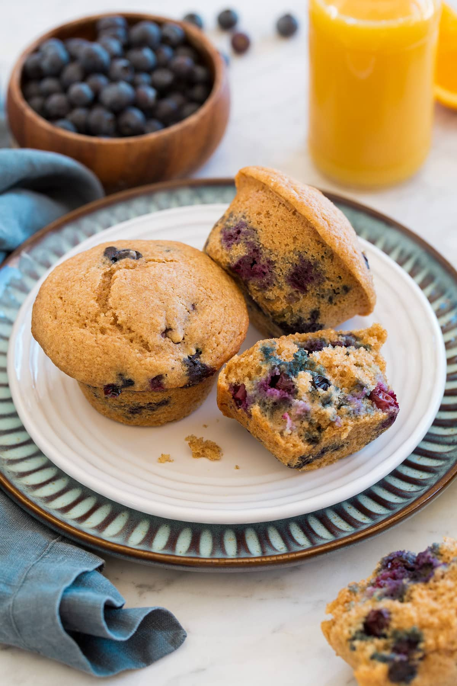

Healthy blueberry muffins

Description
Healthy Blueberry Muffins – made with nutritious whole wheat flour, nutty almond flour, plenty of fresh blueberries, and sweetened with real maple syrup instead of sugar. It’s a healthier version that’s still perfectly delicious!
Ingredients
- 1 cup (150g) whole wheat flour (scoop and level to measure)
- 1/2 cup (56g) almond flour
- 1/2 cup (72g) unbleached all-purpose flour (scoop and level to measure)
- 1 1/2 tsp baking powder
- 1/2 tsp baking soda
- 1/4 tsp salt
- 2/3 cup (155ml) buttermilk
- 1/2 cup (120ml) real maple syrup
- 2 large eggs
- 1/3 cup (80ml) olive oil
- 2 tsp vanilla extract
- 1 1/2 cups (220g) fresh blueberries
Steps
- Preheat oven to 375 degrees.
- Whisk dry ingredients: In a large mixing bowl whisk together wheat flour, almond flour, all-purpose flour, baking powder, baking soda and salt. Make a well in the center of the mixture.
- Mix wet ingredients: In a separate medium mixing bowl whisk together buttermilk, maple syrup, eggs, olive oil and vanilla until well blended.
- Combine mixtures: Pour buttermilk mixture into flour mixture. Fold with a rubber spatula until just nearly combined, then add blueberries and fold just until combined.
- Divide batter among muffin cups: Spray a 12-cup muffin pan with non-stick cooking spray. Pour batter into muffin cups filling each nearly to the top (I like to use a large ice cream scoop to scoop batter).
- Bake until cooked through: Bake in preheated oven until toothpick inserted into the center comes out clean, about 16 to 20 minutes.
- Let cool in pan several minutes then transfer to a wire rack to cool completely.
- Store in an airtight container, for longer shelf life they can be frozen up to 3 months.